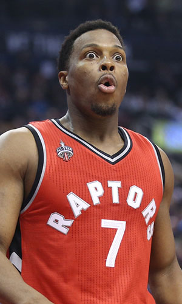

|  |
Матчи |
70 |
|
Передачи (всего/среднее) |
473 |
6.8 |
| В основе |
70 |
|
Подборы в защите (всего/среднее) |
274 |
3.9 |
| Время (всего/среднее) |
2414:20 |
34:29 |
Подборы в атаке (всего/среднее) |
54 |
0.8 |
| Очки (всего/среднее) |
1244 |
17.8 |
Подборы (всего/среднее) |
328 |
4.7 |
| 2-очковые броски (всего/среднее) |
298/652 |
4.3/9.3 |
Перехваты (всего/среднее) |
109 |
1.6 |
| 2-очковые броски (% реализации) |
45.7% |
|
Потери (всего/среднее) |
173 |
2.5 |
| 3-очковые броски (всего/среднее) |
132/391 |
1.9/5.6 |
Блокшоты (всего/среднее) |
13 |
0.2 |
| 3-очковые броски (% реализации) |
33.8% |
|
Блокшоты соперника (всего/среднее) |
58 |
0.8 |
| Штрафные броски (всего/среднее) |
252/312 |
3.6/4.5 |
Фолы (всего/среднее) |
212 |
3 |
| Кайл Лоури |
Штрафные броски (% реализации) |
80.8% |
|
Коэффициент полезности (всего/среднее) |
1051 |
15 |